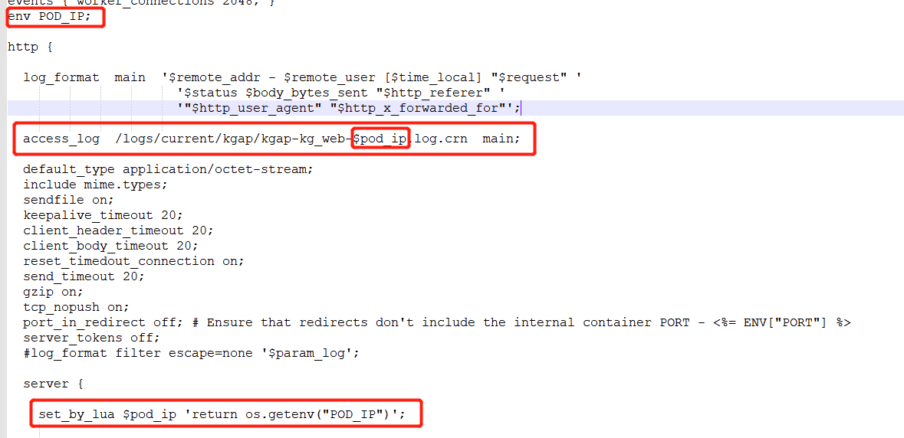

# Base images 基础镜像 FROM centos:centos7 #FROM hub.c.163.com/netease_comb/centos:7 #安装相关依赖 RUN yum -y update RUN yum -y install gcc gcc-c++ autoconf automake make RUN yum -y install zlib zlib-devel openssl* pcre* wget lua-devel #MAINTAINER 维护者信息 MAINTAINER niewx 35715270@qq.com #ADD 获取url中的文件,放在当前目录下 ADD http://nginx.org/download/nginx-1.14.0.tar.gz /tmp/ #LuaJIT 2.1 #ADD http://luajit.org/download/LuaJIT-2.0.5.tar.gz /tmp/ ADD https://github.com/LuaJIT/LuaJIT/archive/v2.0.5.tar.gz /tmp/ #ngx_devel_kit（NDK）模块 ADD https://github.com/simpl/ngx_devel_kit/archive/v0.3.0.tar.gz /tmp/ #lua-nginx-module 模块 ADD https://github.com/openresty/lua-nginx-module/archive/v0.10.13.tar.gz /tmp/ #nginx ngx_cache_purge模块 ADD http://labs.frickle.com/files/ngx_cache_purge-2.3.tar.gz /tmp/ #切换目录 WORKDIR /tmp #安装LuaJIT 2.0.5 #RUN wget http://luajit.org/download/LuaJIT-2.0.5.tar.gz -P /tmp/ RUN tar zxf v2.0.5.tar.gz WORKDIR /tmp/LuaJIT-2.0.5 #RUN cd LuaJIT-2.0.5 RUN make PREFIX=/usr/local/luajit RUN make install PREFIX=/usr/local/luajit #安装ngx_devel_kit(NDK) WORKDIR /tmp RUN tar -xzvf v0.3.0.tar.gz RUN cp -r ngx_devel_kit-0.3.0/ /usr/local/src/ #安装lua-nginx-module模块 RUN tar -xzvf v0.10.13.tar.gz RUN cp -r lua-nginx-module-0.10.13/ /usr/local/src/ #安装nginx ngx_cache_purge模块 RUN tar -xzvf ngx_cache_purge-2.3.tar.gz RUN cp -r ngx_cache_purge-2.3/ /usr/local/src/ #设置环境变量 RUNexport LUAJIT_LIB=/usr/local/lib RUNexport LUAJIT_INC=/usr/local/include/luajit-2.0 RUN mkdir -p {/usr/local/logs,/var/lock} #编译安装Nginx RUN useradd -M -s /sbin/nologin nginx RUN tar -zxvf nginx-1.14.0.tar.gz RUN mkdir -p /usr/local/nginx RUNcd /tmp/nginx-1.14.0 \ && ./configure --prefix=/usr/local/nginx --user=nginx --group=nginx \ --error-log-path=/usr/local/logs/error.log \ --http-log-path=/usr/local/logs/access.log \ --pid-path=/usr/local/logs/nginx.pid \ --lock-path=/var/lock/nginx.lock \ --with-ld-opt="-Wl,-rpath,/usr/local/luajit/lib" \ --with-http_stub_status_module \ --with-http_ssl_module \ --with-http_sub_module \ --add-module=/usr/local/src/lua-nginx-module-0.10.13 \ --add-module=/usr/local/src/ngx_devel_kit-0.3.0 \ --add-module=/usr/local/src/ngx_cache_purge-2.3 \ && make && make install #参数说明 #--prefix 用于指定nginx编译后的安装目录 #--add-module 为添加的第三方模块，此次添加了fdfs的nginx模块 #--with..._module 表示启用的nginx模块，如此处启用了http_ssl_module模块 RUN /usr/local/sbin/nginx -c /usr/local/conf/nginx.conf RUN ln -s /usr/local/sbin/* /usr/local/sbin/ #EXPOSE 映射端口 EXPOSE80443 #CMD 运行以下命令 #CMD ["nginx"] CMD ["/usr/local/sbin/nginx","-g","daemon off;"]
在系统中写入你的环境变量
1
exportTEST_IP=10.10.10.10
在nginx中引入你的环境变量，具体编写参考如下

Nginx监听多个端口
可以配置多个server，每个server配置不同的端口
Nginx的负载均衡
1 2 3 4 5 6 7
//举例，以下IP，端口无效 upstream test{ server 11.22.333.11:6666 weight=1; server 11.22.333.22:8888 down; server 11.22.333.33:8888 backup; server 11.22.333.44:5555 weight=2; }